Daan, Kids with Buns, Custums, Fixkes, Alice Mae, De Ketnetband
NAFT, K's Choice, Mr. Paul & The Lowriders, Jasper Erkens, The Skadillacs, Pauline, Ribbedebeats
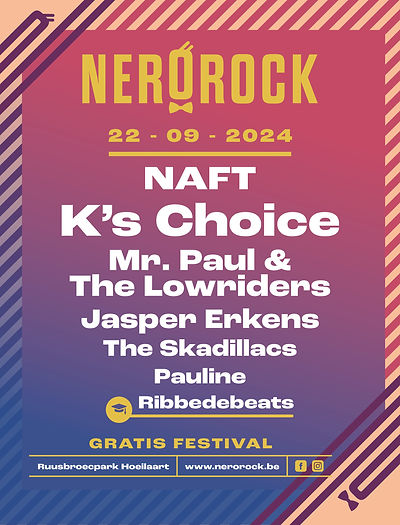
Vive La Fête, Willy on Tour, Mama's Jasje, Meltheads, Lotte De Clercq, Kapitein Winokio
Yevgueni, Yong Yello, School is Cool, Guy Swinnen Band, ILA, The Ragtime Rumours, Radio Oorwoud
Les Truttes, Brihang, High Hi, Indigo Mango, Sebi Lee, Purpleized, De Ketnetband
The Van Jets, De Mens, Jaguar Jaguar, Tessa Dixson, Overweight, OT, Kapitein Winokio
Discobar Galaxie, Blackwave, Chackie Jam, Portland, The Fabulous Moonrakers, Laura Tesoro, Josephine
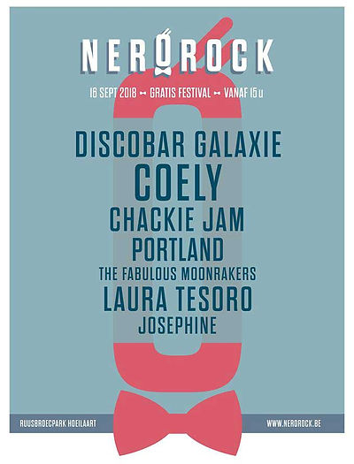
Les Truttes, Ertrebrekers, Lady Linn and her Magnificient Seven, Equal Idiots, Freaky Age, Slick Beavers, Ghost Rockers
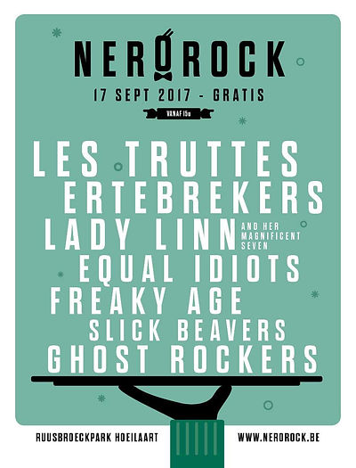
Killer Queen, Tourist LeMC, Janez Detd, Los Callejeros, De Laatste Match Van Ivan Lendl, Kirstie Dialegria, De Ketnetband
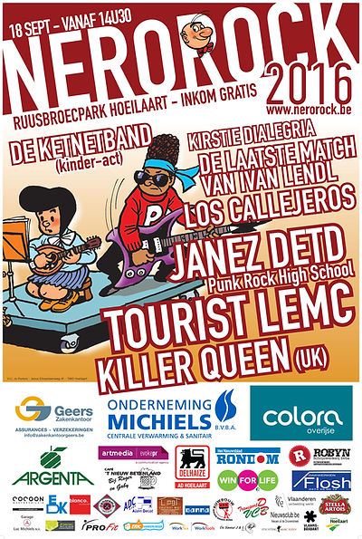
Les Truttes, De Mens, The Selecter (UK), Team William, High Hi, PhilibustasPlus, Kapitein Winokio
Zornik, Raymond van het Groenewoud, The Skadillacs, Barefoot & The Shoes, Winston Wutu, Jacle Bow, Cara & De Caro'kes
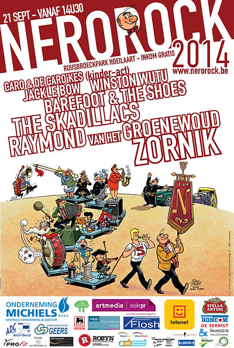
Dog Eat Dog (USA), Absynthe Minded, De Nieuwe Snaar, The Guitar Collection, The Herfst, PolarJacket, Woody Express
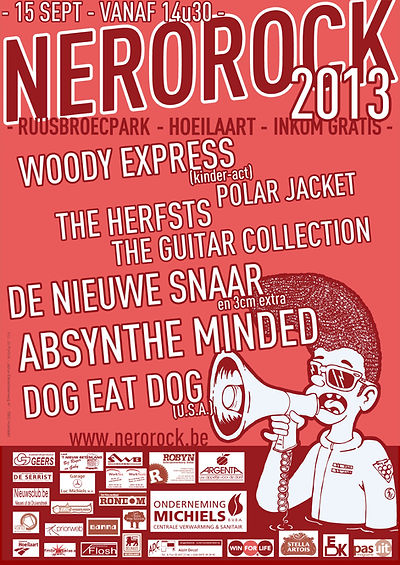
DAAN, De Mens, Walace Vanborn, Gepetto & The Wales, Mayson, Suburban Sun, Kapitein Winokio
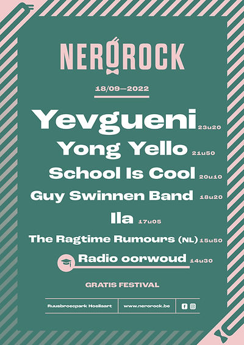
The Counterfeit Stones (UK), A Brand, Intergalactic Lovers, The Rhythm Junks, Carmine, Airplane, The Pilot Light
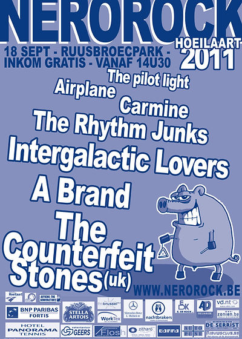
Les Truttes, Internationals, Team William, School is Cool, Lightnin' Guy and the Mighty Gators, Mr. Lucy, The Black Cat Bone Squad
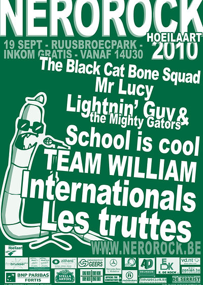
Stijn (dj-set), CPEX, The Cops, Pickle Juice, Bill Roseman, Kowzi, Winston Wutu
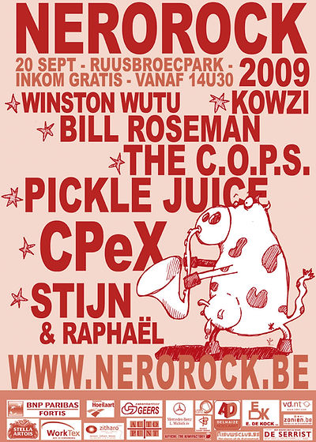
Sioen, Red Zebra, Sébi Lee and the Flatfoot Monkies, Blunt, Lapaz, Australian Rum
Killer Queen, Ska-D-Lite, Fried Bourbon, Tripoli, Hombre, The Slick Beavers, Ad'Eeze
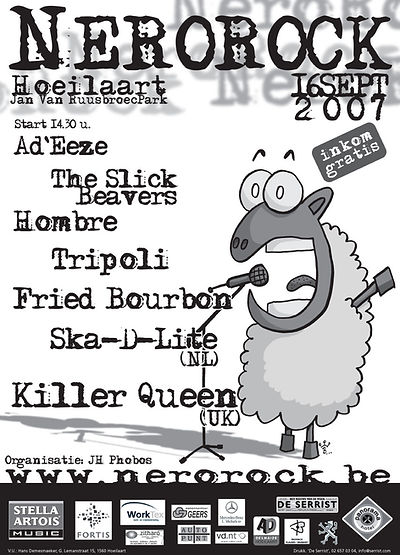
Raymond van het Groenewoud, Skambiance, The Seatsniffers, Larsson, Ambooz, Raymond Wishes
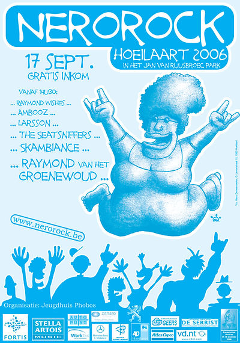
The Kids, Wawa Dada Kwa, Sébi Lee, El Guapo Stuntteam, Ambooz, Toendra
Camden, Internationals, Lil' Dave Thompson, Swinnen, Funeral Dress, Golden Green, Almost Home, Ambooz
Blue Blot Blues, The Dill Brothers, Camden, Belgian Associality, Mawkish, Los Kabrios, Broken Window
Fisher-Z, Liquido, De Heideroosjes, The Kids, Mintzkov Luna, Admiral Freebee, Mint
Raymond van het Groenewoud, The Clement Peerens Explosition, Metal Molly, Betty Goes Green, Groep Jezus, Rumplestitchkin, Tim's Favourite Band, Soul 4 You
De Kreuners, Tom Robinson, Gorki, Jane's Detd, ABN, Golden Green, Elysian, Mindless
The Kids, De Mens, Noordkaap, Eden, Jane's Detd, Jezus, Killjoy
LA Doors, Guy Swinnen & Band, Tröckener Kecks, Ashbury Faith, The Sands, Styptic
Raymond van het Groenewoud, De Mens, The Romans, Tom Helsen, The Boerenzonen op Speed, Het Sigmaplan
The Scabs, BJ Scott, Pieter-Jan De Smet, The Trouble 3, Mercelis Band, Joppe Steengoedt